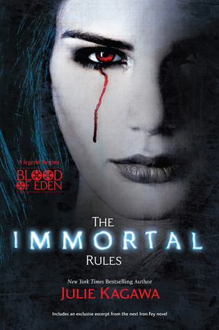
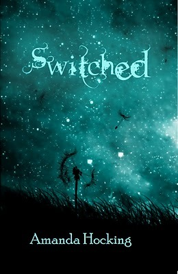
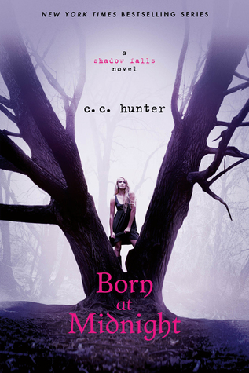
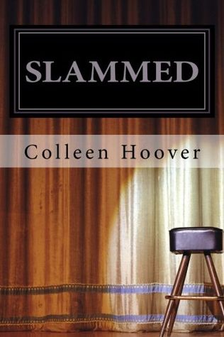

<!doctype html>
<html>
    <title>Horror</title>
    <link rel="stylesheet" href="main.css">
</html>
<body>
    <nav>
        <label class="logo">Horror</label>
        <ul class="nav-links">
            <li><a href="index.html">Home</a></li>
            <li><a href="book.html">Adventure</a></li>
            <li><a href="book1.html">Science Fiction</a></li>
            <li><a href="book2.html">Thriller</a></li>
            <li><a href="book4.html">Humour</a></li>
            <li><a href="book5.html">Mystry</a></li>
        </ul>
    </nav>
    <table cellspacing="20px">
        <tr>
            <td>
                <details>
                    <summary>Introduction</summary>
                      <p>
                        Allison Sekemoto survives in the Fringe, the outermost circle of a walled-in city. By day, she and her crew scavenge for food. By night, any one of them could be eaten. Some days, all that drives Allie is her hatred of them—the vampires who keep humans as blood cattle. Until the night Allie herself dies and becomes one of the monsters.

Forced to flee her city, Allie must pass for human as she joins a ragged group of pilgrims seeking a legend—a place that might have a cure for the disease that killed off most of civilization and created the rabids, the bloodthirsty creatures who threaten human and vampire alike. And soon Allie will have to decide what and who is worth dying for… again.

Enter Julie Kagawa's dark and twisted world as an unforgettable journey begins.
            </p>     
                    
                </details></td>
            
            <td class="a">
                <h3>The immortal rules</h3>
                <p>Julie Kagawa</p>
                <a class="btn1" href="order.html">Purchase</a>
            </td>
        </tr>
        <tr>
            <td>
                <details>
                    <summary>Introduction</summary>
                      <p>
                        When Wendy Everly was six-years-old, her mother was convinced she was a monster and tried to kill her. It isn't until eleven years later that Wendy finds out her mother might've been telling the truth. With the help of Finn Holmes, Wendy finds herself in a world she never knew existed—and it's one she's not sure if she wants to be a part of.
                    </p>     
                    
                </details></td>
            <td class="a">
                <h3>Switched</h3>
                <p>Amanda Hocking</p>
                <a class="btn1" href="order.html">Purchase</a>
            </td>
        </tr>

        <tr>
            <td><details>
                <summary>Introduction</summary>
                  <p>
                    
One night Kylie Galen finds herself at the wrong party, with the wrong people, and it changes her life forever. Her mother ships her off to Shadow Falls—a camp for troubled teens, and within hours of arriving, it becomes painfully clear that her fellow campers aren’t just “troubled.” Here at Shadow Falls, vampires, werewolves, shapeshifters, witches and fairies train side by side—learning to harness their powers, control their magic and live in the normal world.

Kylie’s never felt normal, but surely she doesn’t belong here with a bunch of paranormal freaks either. Or does she? They insist Kylie is one of them, and that she was brought here for a reason. As if life wasn’t complicated enough, enter Derek and Lucas. Derek’s a half-fae who’s determined to be her boyfriend, and Lucas is a smokin’ hot werewolf with whom Kylie shares a secret past. Both Derek and Lucas couldn’t be more different, but they both have a powerful hold on her heart.
</p>
            </details></td>
            <td class="a">
                <h3>Born an midnight</h3>
                <p>C.C. Hunter</p>
                <a class="btn1" href="order.html">Purchase</a>
            </td>
        </tr>

        <tr>
            <td>
                <details>
                    <summary>Introduction</summary>
                      <p>
                        Following the unexpected death of her father, 18-year-old Layken is forced to be the rock for both her mother and younger brother. Outwardly, she appears resilient and tenacious, but inwardly, she's losing hope.

Enter Will Cooper: The attractive, 21-year-old new neighbor with an intriguing passion for slam poetry and a unique sense of humor. Within days of their introduction, Will and Layken form an intense emotional connection, leaving Layken with a renewed sense of hope.

Not long after an intense, heart-stopping first date, they are slammed to the core when a shocking revelation forces their new relationship to a sudden halt. Daily interactions become impossibly painful as they struggle to find a balance between the feelings that pull them together, and the secret that keeps them apart.
</p>
</details></td>
            <td class="a">
                <h3>slammed</h3>
                <p>Colleen Hoover</p>
                <a class="btn1" href="order.html">Purchase</a>
                
            </td>
        </tr>
    </table>
</body>